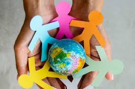
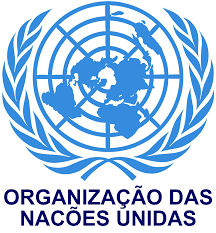
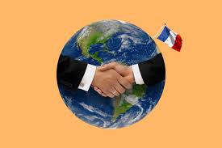
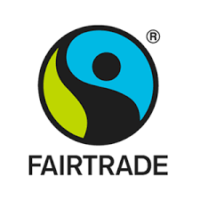
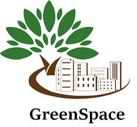

Iniciativas
Os Objetivos de Desenvolvimento Sustentável fazem parte da Agenda 2030 da ONU e representam um compromisso global para erradicar a pobreza, proteger o planeta e garantir prosperidade para todos. São 17 objetivos que abrangem áreas como educação, igualdade de género, clima, saúde e inovação.

ONU – Objetivos de Desenvolvimento Sustentável
Os ODS são 17 metas criadas pela ONU para melhorar o mundo até 2030. Incluem ações para reduzir a pobreza, proteger o ambiente, promover igualdade e garantir educação e saúde de qualidade.

Acordo de Paris
O Acordo de Paris é um compromisso global para combater as alterações climáticas. Os países prometem reduzir emissões poluentes e investir em energias limpas para manter o aquecimento global abaixo de 2°C.

Fairtrade
O Fairtrade certifica produtos que respeitam trabalhadores e o ambiente. Garantem preços justos, melhores condições de trabalho e ajudam pequenos produtores a terem uma vida mais digna.

Greenpeace
A Greenpeace é uma organização ambiental que defende os oceanos, florestas e clima. Usa campanhas e ações pacíficas para alertar sobre poluição, desmatamento e destruição da natureza.
